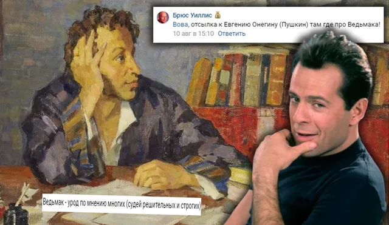
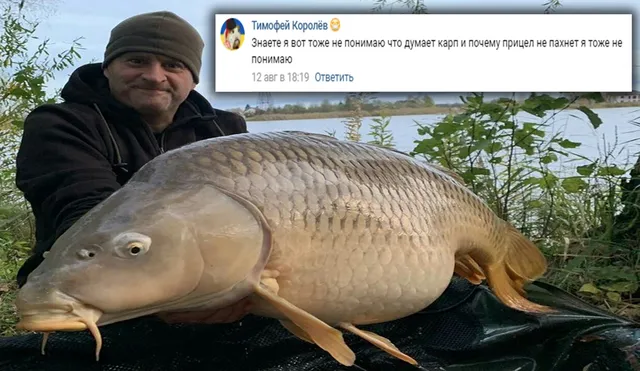

Ваши комментарии
ВКонтакте
🙊Еще одна неделя августа прошла, что ж, встречаем новый выпуск всеми любимой руб…
16 августа 2020 · №376 в выгрузке стены · оригинал во ВКонтакте ↗



#ВашиКомментарии@criticssteam #5
🙊Еще одна неделя августа прошла, что ж, встречаем новый выпуск всеми любимой рубрики!
Вот ваши лучшие комментарии за неделю, сегодня [https://vk.com/@criticssteam-sistema-titulov|титул Комментатора] получают:
[id491132613|Брюс Уиллис]
[id191917835|Глеб Иванов]
[id387519789|Фёдор Белоусов]
[id355653583|Тимофей Королёв]
[id119602395|Вова Адамов]
[id284440935|Никита Лагуткин]
😉Всем спасибо, всем спасибо.
🙊Еще одна неделя августа прошла, что ж, встречаем новый выпуск всеми любимой рубрики!
Вот ваши лучшие комментарии за неделю, сегодня [https://vk.com/@criticssteam-sistema-titulov|титул Комментатора] получают:
[id491132613|Брюс Уиллис]
[id191917835|Глеб Иванов]
[id387519789|Фёдор Белоусов]
[id355653583|Тимофей Королёв]
[id119602395|Вова Адамов]
[id284440935|Никита Лагуткин]
😉Всем спасибо, всем спасибо.